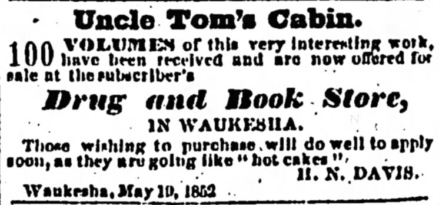

Printing Morality: Uncle Tom's Cabin and the Antebellum Political Realignment
This paper examines how a widely circulated cultural narrative contributed to electoral realignment. I combine historical newspaper advertisements with transportation networks to construct county-level exposure to Uncle Tom's Cabin. Difference-in-differences estimates for northern counties without recorded advertisements show larger declines in Democratic support and increases in Republican support in more exposed counties, particularly in 1856. A one-standard-deviation difference in log exposure corresponds to a 2.7-percentage-point larger decline in Democratic presidential vote share, with similar patterns in congressional elections. Household naming choices, newspaper discussions, and contemporary political references document the novel's broader cultural reception and political use. The findings suggest that cultural diffusion can help make moral arguments consequential for electoral outcomes.
Presented: GW Applied Micro Brownbag, Warwick SAGE Summer School 2023, ACES Summer School 2023, the EHA 2023 Annual Meeting (Poster), the 2025 World Economic History Congress, the ASREC 2026 Annual Meeting, the XMU Conference on Empirical Political Economy 2026, the XMU Workshop on History, Institutions, and Development 2026, and the AEA/ASSA 2027 Annual Meeting (Poster; accepted).